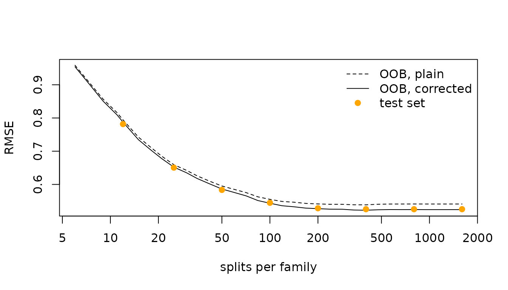

The number of splits and further tuning
Source:vignettes/articles/number-of-splits-and-tuning.Rmd
number-of-splits-and-tuning.RmdThe main setting of a random planted forest is the number of splits
each tree family makes, n_splits. Too few, and the model
misses structure; too many, and it fits the noise. By default
rpf() chooses it out of bag while the forest grows, in the
same call, so it need not be tuned. This article shows how that works,
and how to tune the other settings of the split search.
We use simulated data with two main effects, a two-way and a three-way interaction, and a test set from the same distribution:
make_data <- function(n) {
d <- data.frame(matrix(runif(n * 5, -1, 1), ncol = 5, dimnames = list(NULL, paste0("x", 1:5))))
d$y <- sin(pi * d$x1) + d$x2 + 2 * d$x1 * d$x3 + 3 * d$x2 * d$x3 * d$x4 + rnorm(n, sd = 0.3)
d
}
set.seed(3)
train <- make_data(1000)
test <- make_data(2000)The out-of-bag error
Every tree family is grown on a bootstrap sample of the training rows. About 37% of the rows are not in a given sample: they are out of bag (OOB) for that family. A row’s OOB prediction is the mean over the families it is out of bag for, so it is a prediction from families that never saw the row, and the error of these predictions estimates the error on new data, without a test set or cross-validation.
The OOB prediction averages only about 37% of the families, so it
varies more than the forest’s prediction, and the plain OOB error
overstates the forest’s error. rpf() corrects for this: it
estimates each row’s variance across families from the families of even
and of odd index, and subtracts the excess (?rpf, “The
out-of-bag path”).
One fit gives the OOB error at every number of splits. With the same
seed, the forest with k splits is exactly the first
k splits of a forest grown with more, so each family’s OOB
predictions are updated split by split while it grows.
oob_path = TRUE records them at checkpoints, four per
doubling of the splits (oob_path_checkpoints()):
set.seed(10)
fixed <- rpf(y ~ ., data = train, n_families = 50, n_splits = 1600, oob_path = TRUE,
prune = FALSE, nthreads = 2)
head(fixed$oob_path)
#> n_splits oob_rmse oob_rmse_raw se_mse se_mse_raw
#> 1 6 0.9541798 0.9587492 0.05109850 0.05110657
#> 2 7 0.9152793 0.9200166 0.04844123 0.04845731
#> 3 9 0.8508121 0.8568313 0.04301534 0.04301116
#> 4 11 0.8095226 0.8162719 0.03976165 0.03975176
#> 5 12 0.7876047 0.7943560 0.03778595 0.03777932
#> 6 15 0.7345661 0.7422104 0.03364220 0.03364229To check the OOB error against the test error, we grow the same forest (same seed) to several of the checkpoints and compute its error on the test set:
ks <- c(12, 25, 50, 100, 200, 400, 800, 1600)
test_rmse <- sapply(ks, function(k) {
set.seed(10)
f <- rpf(y ~ ., data = train, n_families = 50, n_splits = k, prune = FALSE, nthreads = 2)
sqrt(mean((test$y - predict(f, test)$.pred)^2))
})
path <- fixed$oob_path
plot(path$n_splits, path$oob_rmse_raw, log = "x", type = "l", lty = 2,
ylim = range(path$oob_rmse, path$oob_rmse_raw, test_rmse),
xlab = "splits per family", ylab = "RMSE")
lines(path$n_splits, path$oob_rmse)
points(ks, test_rmse, pch = 19, col = "orange")
legend("topright", c("OOB, plain", "OOB, corrected", "test set"), lty = c(2, 1, NA),
pch = c(NA, NA, 19), col = c("black", "black", "orange"), bty = "n")
The corrected OOB error follows the test error; the plain one lies
above it. Both fall steeply and then flatten: past some number of
splits, more splits buy nothing but time. Choosing n_splits
by the corrected OOB error usually does as well as cross-validation over
the same values.
The default: n_splits = NULL
With n_splits = NULL, rpf() follows the
forest’s corrected OOB error checkpoint by checkpoint while the families
grow, and stops growing once more splits no longer help:
- once the lowest error is one doubling of the splits back (for example, no new minimum from 100 to 200 splits), or
- once the error is on a plateau: its lowest value improved over the last doubling by at most one standard error of that improvement.
The forest at the lowest error is returned: the same forest that
rpf() with that number of splits and the same seed would
give. Growing also stops at 25,600 splits, with a warning if the error
was still falling there.
set.seed(10)
model <- rpf(y ~ ., data = train, nthreads = 2)
model$fit$splits_oob
#> $n_splits
#> [1] 476
#>
#> $stopped_at
#> [1] 673
#>
#> $capped
#> [1] FALSEn_splits is the chosen number of splits and
stopped_at where growing stopped; capped says
whether it stopped at 25,600 with the error still falling. The path of
the checkpoints grown is in model$fit$oob_path:
path <- model$fit$oob_path
plot(path$n_splits, path$oob_rmse, log = "x", type = "b", pch = 20,
xlab = "splits per family", ylab = "corrected OOB RMSE")
abline(v = model$fit$splits_oob$n_splits, col = "orange")The families do not all grow to the end and wait: they grow one at a
time (nthreads at once), each to the stop estimated from
the families before it, and keep only their OOB predictions and a short
record of their splits, from which the chosen forest is rebuilt. This
keeps the memory of the search small; Speed and memory says more.
The plateau stop’s tolerance is
getOption("randomPlantedForest.adaptive_tolerance", 1), in
standard errors. 0 stops only on the first rule.
A fixed number of splits
n_splits = <number> grows every family to that
many splits. oob_path = TRUE with a fixed
n_splits gives the path above but stops according to
n_splits.
A “split” counts a round of the search: a round tries its candidates and makes the best split, and near saturation, when every candidate’s leaf is too small to split, a round can make none.
Tuning the split search: tune
The number of splits is chosen in every fit. Two other settings
matter on some data: the greediness of the split search
(n_try_split_points and share_candidates, see
How the forest is grown) and the minimum leaf
size min_leaf_rows. rpf(tune = ) searches them
out of bag in one call: every forest of the search gets its number of
splits chosen out of bag and is pruned, and the forest whose pruned
model has the lowest corrected OOB error wins.
-
tune = "quick"grows two forests: 3 / 0.1 (the default) and 1 / 0.025. -
tune = TRUEruns a coordinate search of about 10 forests: the greediness ladder from 10 / 0.4 to 1 / 0.0125 atmin_leaf_rows = 1, thenmin_leaf_rows1, 5, 20 and 100 at the chosen point, then the two neighbours of the chosen point on the ladder. -
tune = tune_control(...)sets your own search (see below).
greediness_ladder()
#> n_try_split_points share_candidates
#> 1 40 1.000000
#> 2 20 0.800000
#> 3 10 0.400000
#> 4 5 0.200000
#> 5 3 0.100000
#> 6 2 0.050000
#> 7 1 0.025000
#> 8 1 0.012500
#> 9 1 0.006250
#> 10 1 0.003125
set.seed(10)
tuned <- rpf(y ~ ., data = train, tune = "quick", nthreads = 2)
tuned$tune$search[, c("n_try_split_points", "share_candidates", "min_leaf_rows",
"n_splits", "n_kept", "oob_rmse", "final")]
#> n_try_split_points share_candidates min_leaf_rows n_splits n_kept oob_rmse
#> 1 3 0.100 1 476 4 0.3436807
#> 2 1 0.025 1 566 4 0.3407781
#> final
#> 1 FALSE
#> 2 TRUE
tuned$tune$settings
#> $n_try_split_points
#> [1] 1
#>
#> $share_candidates
#> [1] 0.025
#>
#> $min_leaf_rows
#> [1] 1
#>
#> $n_splits
#> [1] 566The result is the chosen forest’s pruned model, with the search in
$tune. A search costs about as many fits as it grows
forests.
Your own search: tune_control()
tune_control() has four arguments, one for each part of
the search:
-
ladder: the points of greediness that can be searched, greediest first. The default isgreediness_ladder(), shown above; you can pass your own data frame with the columnsn_try_split_pointsandshare_candidates. -
search: the rows of the ladder that are tried in the first step (default3:8, from 10 / 0.4 to 1 / 0.0125). -
min_leaf_rows: the leaf sizes tried in the second step, at the point of greediness chosen in the first (defaultc(1, 5, 20, 100)). The first value is the one used in the first step. With a single value the second step is skipped. -
neighbours: whether a third step also tries the two ladder points next to the chosen one (defaultTRUE).
So tune = TRUE is tune_control() with its
defaults, and tune = "quick" is
tune_control(search = c(5, 7), min_leaf_rows = 1, neighbours = FALSE).
A search of your own is useful when you already know where to look, or when a fit is expensive and you want few forests. Here we try three points of greediness and then two leaf sizes, four forests in all:
set.seed(10)
own <- rpf(
y ~ .,
data = train,
tune = tune_control(search = c(3, 5, 7), min_leaf_rows = c(1, 20), neighbours = FALSE),
nthreads = 2
)
own$tune$search[, c("n_try_split_points", "share_candidates", "min_leaf_rows",
"n_splits", "n_kept", "oob_rmse", "final")]
#> n_try_split_points share_candidates min_leaf_rows n_splits n_kept oob_rmse
#> 1 10 0.400 1 400 4 0.3636225
#> 2 3 0.100 1 476 4 0.3436807
#> 3 1 0.025 1 566 4 0.3407781
#> 4 1 0.025 20 1345 4 0.3474316
#> final
#> 1 FALSE
#> 2 FALSE
#> 3 TRUE
#> 4 FALSEEach row is one forest of the search, and final marks
the chosen one.
Usually the accuracy is already very good with the defaults. But tuning can give some additional boost in accuracy.